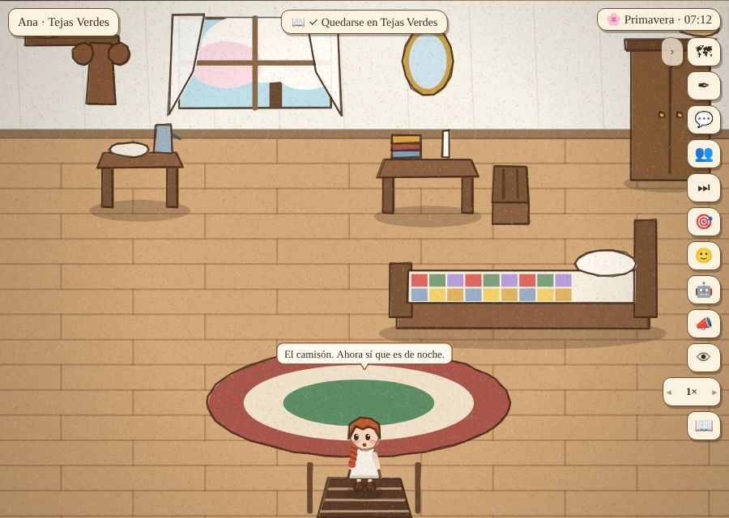
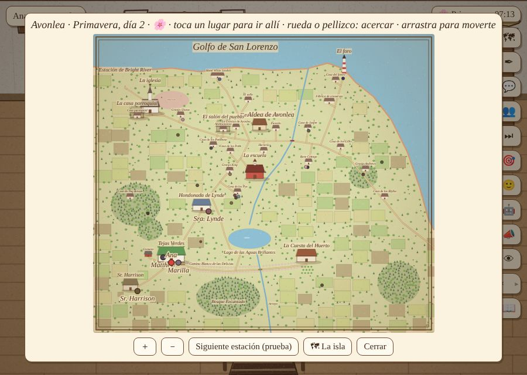
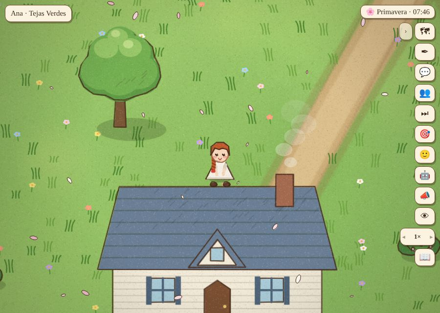
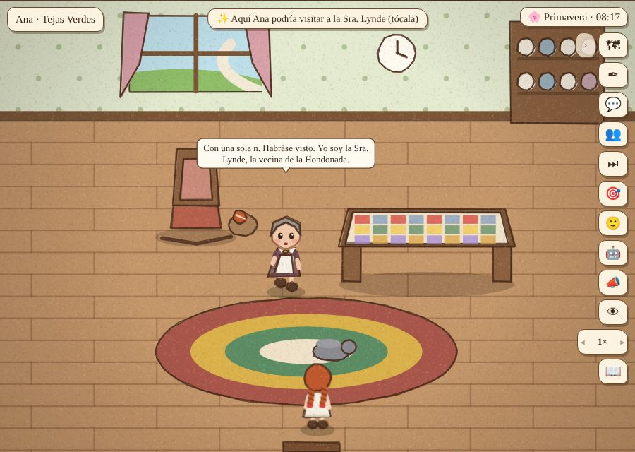
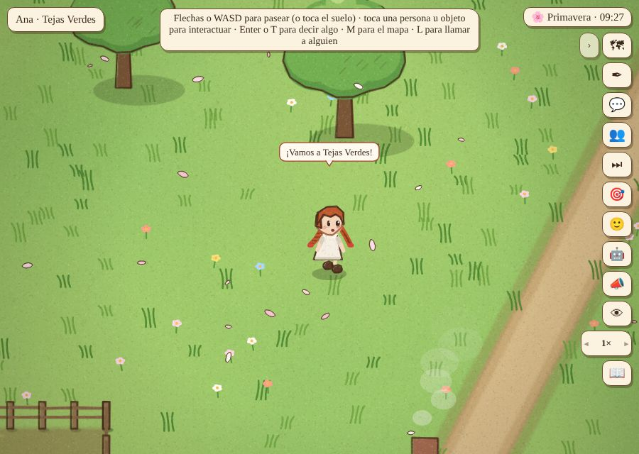
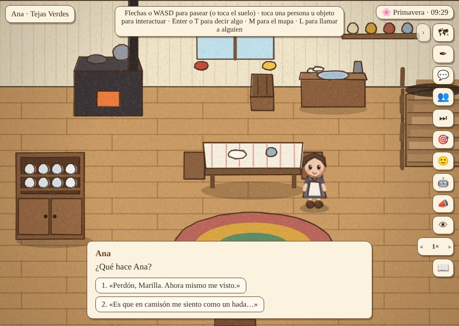
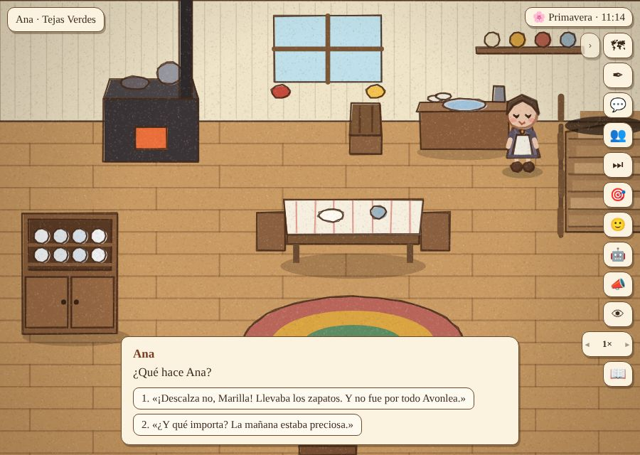
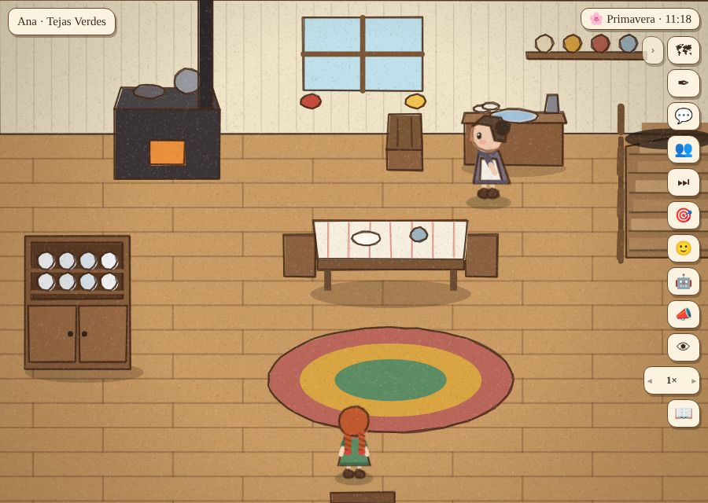
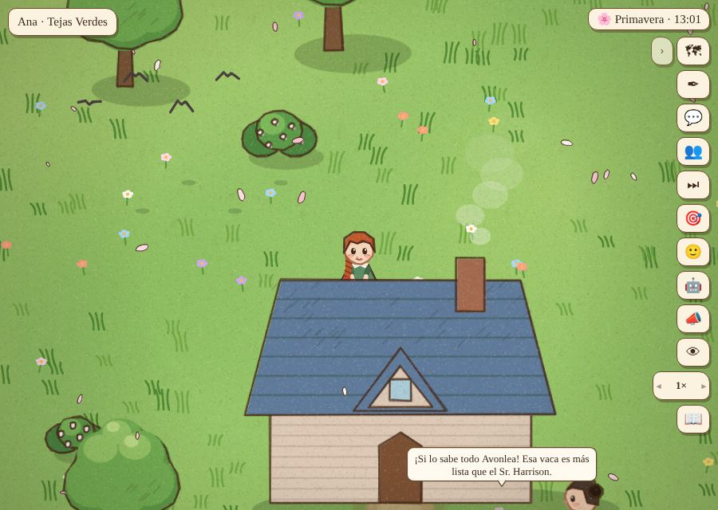
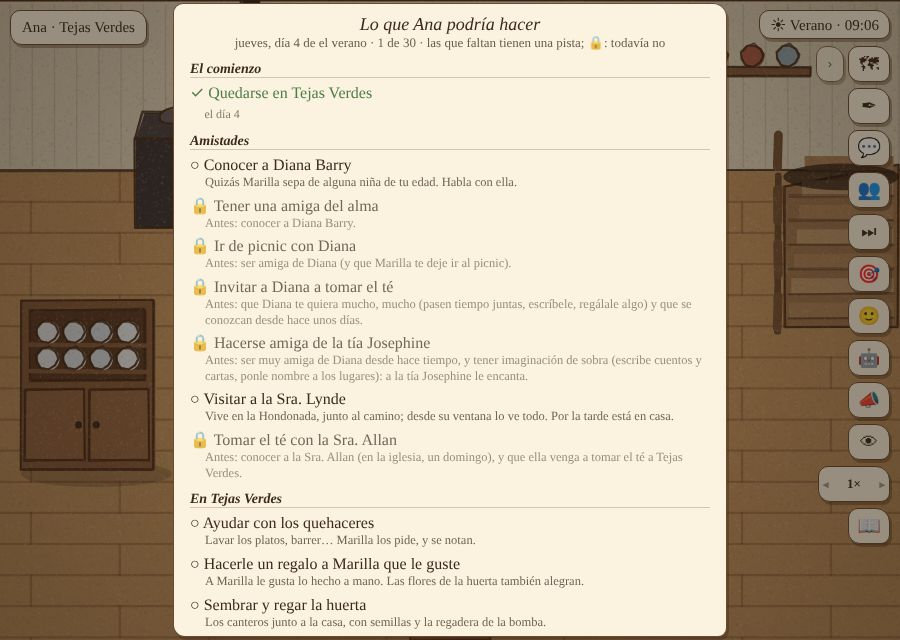

Prueba de usuaria: el chisme del camisón
Una partida jugada como jugadora, con clics en la pantalla, para ver las noticias-creencias y las llegadas del libro desde el lado de quien juega. Para no jugar en tiempo real los tres primeros días, la partida salta al día 4 en la mañana (Ana ya se queda), y después al día 18. ← Partida 5
Lo que pasó
- Día 4, 7:12: Ana se levanta en camisón y, por el mapa, se va a la casa de la Sra. Lynde. Al tocar el techo de la casa en el mapa, Ana quedó detrás de la casa, sin poder entrar (arreglado).
- Toca la puerta y entra. La Sra. Lynde la ve en camisón («¡Habráse visto!») y se presenta. Desde ahí, la Sra. Lynde lo sabe (versión 1: lo vio ella).
- Vuelve a casa por el mapa (ya con el arreglo: llega a la puerta). Marilla la ve en camisón: Ana pide perdón y se viste.
- 11:14: tres horas después de la visita, a Marilla le llega el chisme agrandado (versión 2, de la Sra. Lynde, que exagera): «Ana Shirley. La Sra. Lynde me dice que anduviste en camisón por todo Avonlea, y descalza». Ana elige defenderse: «¡Descalza no, Marilla! Llevaba los zapatos». Marilla: «En Avonlea las cosas crecen al contarlas, eso es verdad. Pero en camisón anduviste, ¿o no? Que no se repita.» Así debía ser.
- Mediodía, en la aldea, escuchando a los vecinos. El día 4 comentaban «el nuevo pastor» y «la Sra. Allan», que todavía no llegan, y un chisme fijo de «la vaca de los Cuthbert» que no venía de las noticias (arreglado).
- Día 18: en el diario queda «Diana Barry volvió de Carmody, donde su tía». En el cuaderno, la pista de Diana sigue siendo la del libro: «Quizás Marilla sepa de alguna niña de tu edad».
Lo que arreglé
- El mapa: tocar el techo o el nombre de una casa (que se dibujan encima) ahora lleva a su puerta; antes, a veces, al lugar libre más cercano, detrás de la casa.
- Las frases de pareja de los vecinos pueden esperar a la historia, como las demás líneas:
[presente:allan] Dicen que el nuevo pastor…,[presente:gilbert] …. El chisme fijo de la vaca salió: los chismes vienen denoticias.txt. Y la Sra. Lynde habla de «la maestra nueva» cuando llega la Srta. Stacy, no cuando Ana empieza la escuela. - «¡Vamos a Pensión!» → «¡Vamos a la pensión!» (y «a la casa de los Pye», «al hotel White Sands»).
- El mapa decía «Primavera, día 2» el día 4 (contaba como cuando las estaciones duraban dos días): ahora dice el día de la estación, como el cuaderno.
Para pensar (no lo cambié)
- Marilla la reta dos veces por lo mismo: cuando la ve, y cuando le llega el chisme. Tiene sentido (la segunda es por lo que dicen), pero podría pesar: si Marilla ya la vio, el chisme podría bastar con un comentario más corto.
- La meta «Visitar a la Sra. Lynde» no se marcó con esa visita (en camisón, en la mañana): la meta pide una visita de verdad, en la tarde. Quizás convenga decirlo en la pista.
- Que Diana volvió solo queda en el diario. Podría ser una noticia que Marilla le cuenta a Ana.
Las fotos









